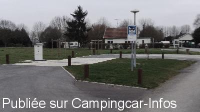

AS = Aire de services uniquement de :
ATTIGNY
(N° 117)
Accès/adresse :
38, chemin de l'Assaut
A l'entrée du camping d'Attigny
08130 ATTIGNY
A l'entrée du camping d'Attigny
08130 ATTIGNY
Latitude : (Nord) 49.483333° Décimaux ou 49° 28′ 59′′
Longitude : (Est) 4.576111° Décimaux ou 4° 34′ 33′′
Tarif : 2016
Services : 2 €
Jetons en vente au camping ou au kiosque Place Charlemagne
Type de borne : EURO-RELAIS
Services :


Autres informations :
Possibilité de stationner, mais à éviter .

Le 10/03/2016 par Fred 08
Aucun commentaire pour le moment